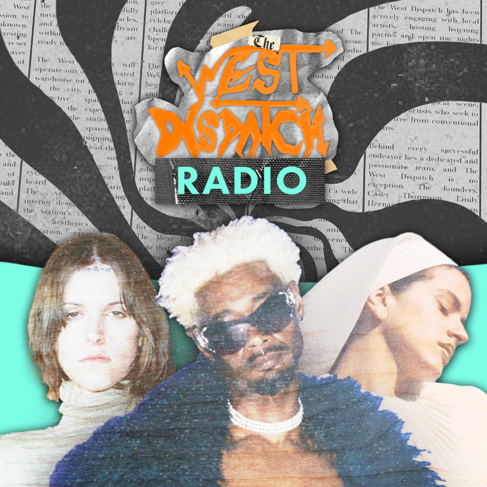

The West Dispatch Radio
Ausgabe 23 - 23.11.25
Tracklist
- 01. Osibisa - Coffee Song (7:30)
- 02. K. Frimpong - Hwe Hwe Mu Na Yi Wo Mpena (4:50)
- 03. The Lijadu Sisters - Come On Home (3:45)
- 04. William Onyeabor - Better Change Your Mind (6:12)
- 05. Gyedu-Blay Ambolley - Simigwa (5:05)